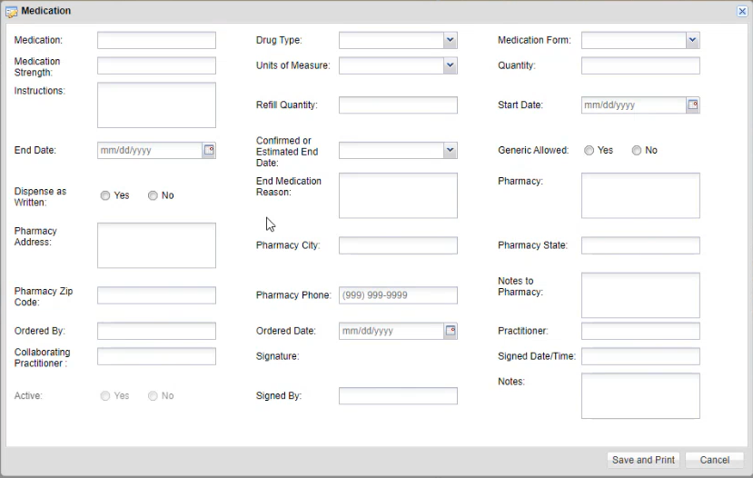
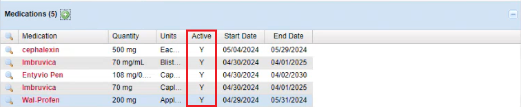

To Access and Fill in the Medication Layout:

The Medication Layout has an “Active” status which automatically updates from "Yes" to “No” once the inputted medication end date has passed. If the end date is not entered the medication “Active” status will remain as “Yes”.
The Active status of a medication can be seen in the Medication Section N for No and Y for Yes.

The Print view will have a new updated view that includes all the medications fields included in the Medication Layout.